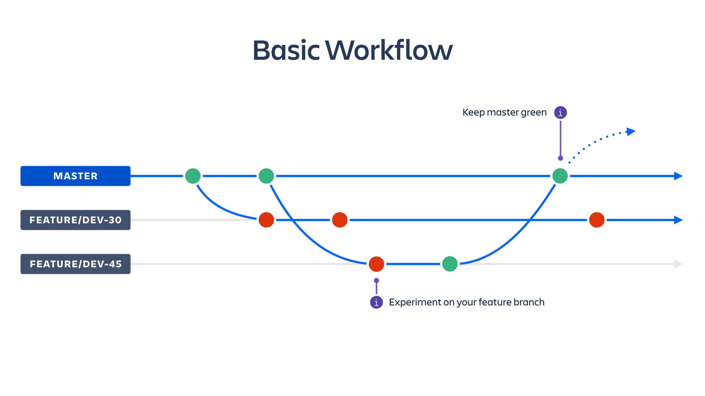

What is this?
Continuous Integration is a development practice that requires developers to integrate code into a shared repository several times a day. Each check-in is verified by an automated build, allowing teams to detect and fix problems early.
Benefits of using CI?
Rules of doing this
One of good CI practices - Git flow
